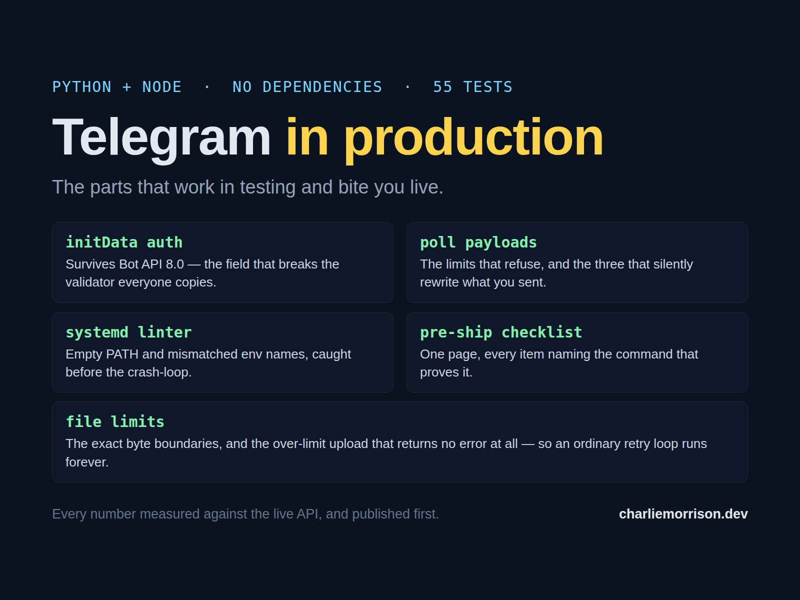
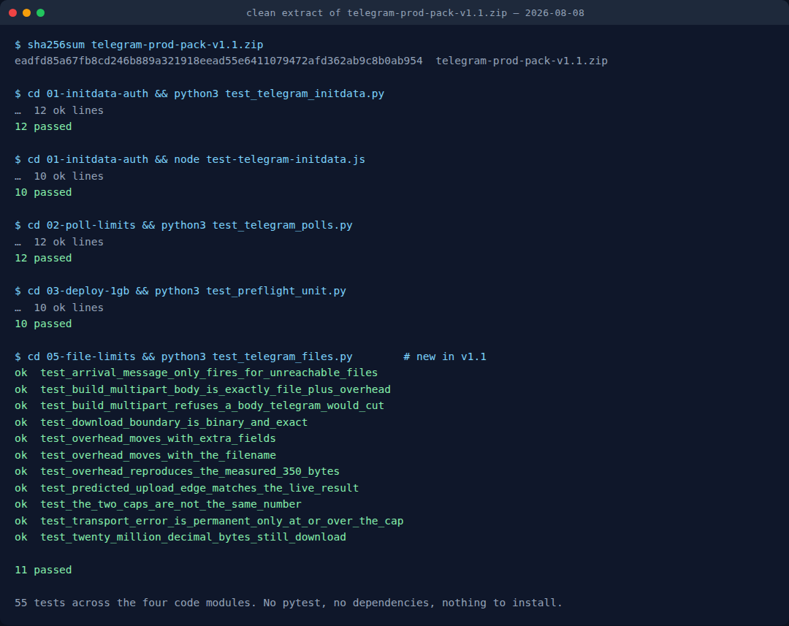

Not a boilerplate. The five places a Telegram bot or Mini App works perfectly in testing and then fails in front of real users — each one fixed in dependency-free code, each one backed by a measurement you can read for free before you buy anything.

Instant download · 40 KB ZIP, Python + Node, no dependencies · commercial use allowed
Get the pack — $19Search for a Telegram bot boilerplate and you will find a dozen good ones, free, doing project setup better than anything anybody sells. Buying that would be silly, so this pack does not compete with it.
It handles the other end of the job. Your bot works. The Mini App opens. Then someone forwards a 30 MiB video and the bot goes silent, or a poll comes back with a timer you did not ask for, or the unit file that ran fine by hand crash-loops for thirty-four hours under systemd because Environment= spelled a variable differently from your code. Each of those is a specific, findable behaviour of the platform — and each one costs a weekend to discover from the inside.
initData validation that survives Bot API 8.0: excludes signature as well as hash, hashes raw values, enforces auth_date. Python and Node, same behaviour in both. The field that breaks every validator copied from a 2023 blog post.sendPoll refuses, and — the reason the module exists — the three things it accepts and then silently changes. Ask for a 4-second timer and get 5, with ok: true and no warning.preflight_unit.py, which lints a unit for the two failure modes that cost me weeks: a relative ExecStart under systemd's empty PATH, and Environment= names that do not match what the code actually reads.Plus a README per module explaining what breaks, why, and what the code does about it — and, in each one, an explicit note on what was not measured.
Every limit in the pack was probed against the live Bot API, one byte or one character either side of the boundary, before it was written down. The strongest example is the one I would want to see if I were buying:
Telegram's upload wall is not on your file, it is on the whole HTTP request body — 52,428,799 bytes of body was cut exactly like 52,428,800 was, which is not how a file-size limit behaves. So the largest file you can send is the cap minus whatever your multipart encoder wraps around it. For the probe's exact field set that overhead computes to 350 bytes, predicting a maximum of 52,428,450. Sent live: 52,428,450 accepted, 52,428,451 cut. Exact to the byte.
That is a prediction made in advance from the structure of the request and then confirmed, not a number read off a documentation page — and it is what test_overhead_reproduces_the_measured_350_bytes pins in the test suite, so it stays true.
No test framework, no dependencies, nothing to install. This is a clean extract of the zip a buyer downloads, not the working tree it was built in:

Run from telegram-prod-pack-v1.1.zip, sha256 eadfd85a…, on 2026-08-08.
Each module has a write-up behind it, published here before the pack existed. Read them, take the numbers, and only buy if you would rather have the finished code than write it yourself:
A bot can send 2.5× what it can fetch. getFile serves 20,971,520 bytes — 20 MiB exactly, so a guard written as size > 20_000_000 turns away nearly a megabyte of files that work fine. Above that ceiling the update is still valid, the file_id is still real and file_size is populated, so nothing in your code looks wrong; the file simply never arrives.
Worse, an over-limit upload does not come back as a 413. Telegram drops the TLS connection about thirty seconds in, so your client raises a transport error — and the retry policy almost everyone writes ("give up on 4xx, retry transport errors") will re-send an impossible body forever, logging what looks like an intermittent network fault. That one is in the pack because it is the kind of bug you do not find by reading; you find it in a billing statement.
The parameter reference for all of this is the official Bot API documentation, and the higher ceilings mentioned below come from the local Bot API server project.
Stating this here rather than after you have paid. The measurements behind the pack ran one bot over one network path against the cloud Bot API. A self-hosted Bot API server raises the file ceilings substantially and none of that was measured. The upload-by-URL path, where Telegram fetches the file itself, was not probed either. The aiogram finding in module 01 concerns versions 3.27.0 and 3.30.0 and may well be patched by the time you read this — the module ships the correct implementation, which is correct either way.
There is also no payments module, no database layer and no hosting. It is four small code modules and a checklist, not a framework.
initData implementation. No framework, no dependencies, no test runner: python3 test_telegram_files.py and it runs.Built and written by Charlie Morrison. Test counts on this page come from running the shipped zip, not from memory.
← Browse all products